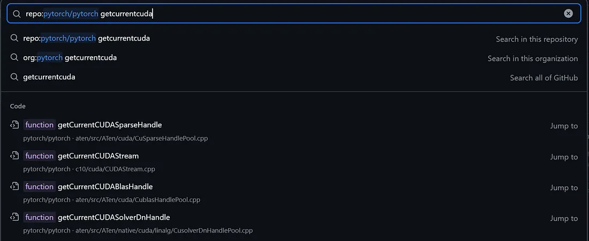

Notes on Writing PyTorch CUDA Extensions
Intro: PyTorch is a Deep Learning Operating System.
Check tensor storage
Device check
You should ALWAYS check EXPLICITLY whether input tensors are on desired devices. In most cases you want them on the same GPU, or in rare cases you want some tensors on CPU to perform some operations that are not efficient on GPU.
API:
tensor.is_cuda()tensor.device()(Useoperator==for equality comparison).
Sometimes the not on correct device problem causes strange error messages like Cusparse context initialization failure or things even more weird, which first seem unrelated to a device problem. This is why I suggest you always start your debug journey here.
Contiguity check
Modern LibTorch recommends using Packed tensor accessor (roughly the same memory cost as a pointer) to access elements in tensor.
However, if you are to plug some others’ implementation (likely using raw pointers like float*) into PyTorch, you are not likely to understand the code inside out and rewrite it.
Usually, in the context of deep learning, most implementations assumes a row-major contiguous storage. You should explicitly check whether the input tensors are contiguous in the C++ code that wraps the CUDA kernel.
API: tensor.is_contiguous()
Cheatsheet
A quick utility that checks whether all tensors are on the same CUDA device:
void CheckInputTensors(const std::vector<torch::Tensor> &tensors) {
TORCH_CHECK(!tensors.empty(), "No tensors provided for device check");
auto first_device = tensors[0].device();
TORCH_CHECK(first_device.is_cuda(), "First tensor is not on CUDA");
int idx = 0;
for (const auto &tensor: tensors) {
TORCH_CHECK(tensor.device() == first_device,
"All tensors must be on the same CUDA device, "
"but found tensor at index [", idx,
"] on device ", tensor.device(),
" while expecting ", first_device);
TORCH_CHECK(tensor.is_contiguous(),
"All tensors must be contiguous, but found tensor at index [",
idx, "] not contiguous");
idx += 1;
}
}
CUDA stream
Remember to always get the current CUDA stream via at::cuda::getCurrentCUDAStream() and pass it as the 4-th parameter in the <<<gridDim, blockDim, sharedMemorySizeBytes, stream>>> kernel call.
This is especially important when your operator is used in distributed training, where at::cuda::getCurrentCUDAStream() automatically selects the correct stream for you.
CUDA toolkit version problem
Most “symbol not found” problem are caused by compiler / assembler / library version mismatch. Let me elaborate on this a bit:
- PyTorch has an important version information attached to it: The version of CUDA that torch is compiled on (let’s call it VT, cuda Version of Torch, for the sake of simplicity). The torch installation comes with its own CUDA toolkit (that matches VT) with no nvcc, ptxas.
- If you are to write custom CUDA extension to PyTorch, it will use the nvcc and ptxas in your system
PATH, and libraries like CUBLAS or CUSPARSE inLD_LIBRARY_PATH. Let’s call this CUDA toolkit version VE, cuda Version of Extension. - When you try to compile a CUDA extension, Make sure that your VT and VE perfectly match (NOT major version match).
- When you compile your extension, PyTorch hints you that a minor version mismatch should not be a problem. Remember, everything that should not happen will eventually happen.
Memory Management in PyTorch
Allocation
When you need a buffer on HBM (e.g., for CUSPARSE or CUBLAS), your first instinct might be cudaMalloc and cudaFree. However, these force synchronization between CPU and GPU, which can starve the GPU.
Here’s the key: PyTorch isn’t just an autograd tool. It’s a deep learning operating system that manages VRAM internally with a pooling and caching mechanism.
Using the PyTorch allocator is straightforward. Follow these steps:
- Set
dtypetotorch::kInt8and create a buffer tensor viatorch::empty - Get the pointer with
buffer_tensor.data_ptr<int8_t>()
This gives you a pointer to the buffer. Here’s a complete code snippet:
auto buffer_options = torch::TensorOptions().device(your_device).dtype(torch::kInt8);
auto buffer_tensor = torch::empty({buffer_size}, buffer_options);
void *buffer_ptr = buffer_tensor.data_ptr<int8_t>();
Remember do not call cudaFree on the pointer. RAII semantics will give the memory back to the allocator when destructor is called.
PyTorch’s memory management is pretty much like a combination of OS memory management (buddy system, SLAB) and JVM or .net runtime (garbage collection, memory pool, caching and reusing memory blocks), but manages VRAM instead of a RAM.
I recommend reading this post (Chinese) for a deeper dive into how PyTorch manages memory.
Using CUBLAS, CUSPARSE, CUSolverDn, etc.
We use CUSPARSE as an example. The same rule apply to other libraries like CUBLAS or CUSolverDn.
Handles
When writing pure CUDA/C++ code, you manually call cusparseCreate to initialize the CUSPARSE context and prepare for subsequent CUSPARSE API calls.
However this is not best practice in PyTorch CUDA extensions. There are good reasons: cusparseCreate introduces a milliseconds-level delay on CPU side. This may not be noticeable at first, but remember that operators are written to be run millions of times, which turns this into a significant overhead. This can cause GPU to starve when waiting CPU for synchronization.
- If you use
VizTracerto trace your program and visualize it in perfetto, you may noticecudaGetDevicePropertiescall taking too much time on CPU side. This can be directly caused bycusparseCreate.
LibTorch has API that automatically manages a pool of CUSPARSE handles:
- Include the header that brings in CUDA context manager for LibTorch:
#include <ATen/cuda/CUDAContext.h> - Then, get handle via
auto handle = at::cuda::getCurrentCUDASparseHandle();automatically create a handle if there is not any, and caches it for subsequent uses. - Use your handle as usual.
I could not find documentation for these APIs, so if you want to know more, you may need to read the source code of PyTorch ATen. Searching in the repo with keyword getcurrentcuda can get you there quickly.

Buffers
Many CUSPARSE operations need buffers. If you need to make multiple CUSPARSE API calls with similar buffer size, it is bad practice to allocate right before the CUSPARE API call and deallocate right after since cudaMalloc and cudaFree are quite slow, which may cause your GPU to starve (verify this with VizTracer).
A better practice should be pre-allocating the buffer and pass its pointer into where the CUSPARSE API is called through torch.empty().
Batched Matrix Multiplication
Refer to this example to see how to perform batched matrix multiplication in CUSPARSE.
Tricks:
- To broadcast, set stride to 0.
- It is possible to broadcast
rowptrbut notcolindandvalues.
Check documentation for details.
Tensor Options
struct TensorOptions carries many information about the tensor:
struct C10_API TensorOptions {
// ... omitted
// members
Device device_ = at::kCPU; // 16-bit
caffe2::TypeMeta dtype_ = caffe2::TypeMeta::Make<float>(); // 16-bit
Layout layout_ = at::kStrided; // 8-bit
MemoryFormat memory_format_ = MemoryFormat::Contiguous; // 8-bit
bool requires_grad_ : 1;
bool pinned_memory_ : 1;
// Existense of members
bool has_device_ : 1;
bool has_dtype_ : 1;
bool has_layout_ : 1;
bool has_requires_grad_ : 1;
bool has_pinned_memory_ : 1;
bool has_memory_format_ : 1;
}
The most important methods are:
[[nodiscard]] TensorOptions device(Device device) const;
[[nodiscard]] TensorOptions dtype(ScalarType dtype) const;
[[nodiscard]] TensorOptions requires_grad(bool) const;
Usage:
tensor.options()returns an instance ofTensorOptionsthat describes thetensor.opt.dtype(torch::kFloat64)has other properties remain the same asopt, onlydtypechanges tofloat64or in C++,double.- The
.to(...)method of a tensor can take aTensorOptionsinstance as its only argument.
For an exhaustive list of device and dtype, you may want to refer to:
- https://github.com/pytorch/pytorch/blob/main/torch/csrc/api/include/torch/types.h
- https://github.com/pytorch/pytorch/blob/main/c10/core/DeviceType.h
Debug layer by layer
A CUDA extension is roughly split into 4 parts, from the bottom to the top namely:
- CUDA kernel
- C++ wrapper
- data passed from Python (PyTorch) to C++
- Python wrapper
CUDA kernel
Debugging CUDA kernel is a very very difficult problem and we shall not discuss it here.
C++ wrapper
The first thing I want to hint you is that do not dereference a pointer pointing to device in host functions. You should always mark device pointers with a d_ prefix in variable names, or wrap it with thrust::device_ptr.
printf, std::cout or gdb will assist you in the journey.
data passed from Python (PyTorch) to C++
Refer to Pybind11 docs and try to answer these questions:
- How various Python types are represented in Pybind11 API;
- How to properly configure the function prototype in Pybind11?
Python Wrapper
Ask LLMs. LLMs know python much better than I do.
What to Reference
To my knowledge, the PyTorch C++ documentation is very old. Many things in the source code are not documented there.
It is a better choice to just search in the PyTorch github repo, and read the comments and source code.